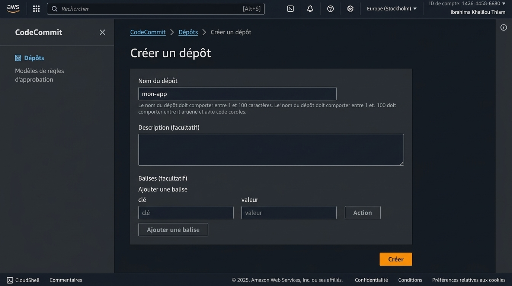
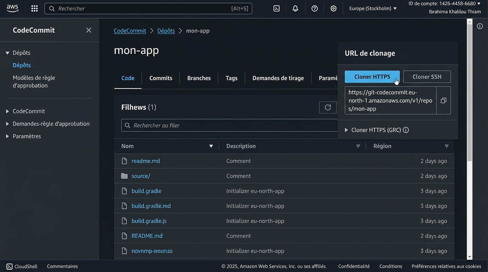

1. Objectif
AWS CodeCommit est un service de contrôle de source entièrement géré qui héberge des dépôts Git privés. Il permet aux équipes de stocker facilement et en toute sécurité du code, des artefacts binaires et des métadonnées, et de collaborer sur le développement.
- Créer un dépôt CodeCommit depuis la console AWS.
- Configurer l'authentification Git (credential helper).
- Cloner, pousser (push) et tirer (pull) du code.
- Gérer les branches et les fusions (merge).
- Configurer des triggers pour automatiser les pipelines CI/CD.
Pourquoi CodeCommit ? Contrairement à GitHub ou Bitbucket, CodeCommit s'intègre nativement avec les services AWS (IAM pour les permissions, CloudWatch pour les logs, SNS pour les notifications) et ne nécessite pas de gestion de serveur.
2. Création d'un dépôt CodeCommit
Étapes via la console :
- Console AWS → Service CodeCommit → Create repository.
- Repository name :
mon-projet-dev.
- Description (optionnel) :
Projet Master 2 — Application web.
- Cliquer sur Create.

Via AWS CLI :
aws codecommit create-repository --repository-name mon-projet-dev --repository-description "Projet Master 2 — Application web" --region us-east-1
# Réponse JSON
{
"repositoryMetadata": {
"repositoryName": "mon-projet-dev",
"repositoryId": "a1b2c3d4-5678-90ab-cdef-EXAMPLE11111",
"repositoryDescription": "Projet Master 2 — Application web",
"cloneUrlHttp": "https://git-codecommit.us-east-1.amazonaws.com/v1/repos/mon-projet-dev",
"cloneUrlSsh": "ssh://git-codecommit.us-east-1.amazonaws.com/v1/repos/mon-projet-dev",
"Arn": "arn:aws:codecommit:us-east-1:123456789012:mon-projet-dev"
}
}
URL de clone : Deux URL sont disponibles : HTTPS (nécessite le credential helper) ou SSH (nécessite une clé SSH uploadée dans IAM). HTTPS est généralement plus simple à configurer.
3. Configuration du credential helper
Pour utiliser CodeCommit via HTTPS, vous devez configurer le credential helper Git qui utilisera les credentials AWS (IAM).
Configuration globale :
# Configurer le credential helper
git config --global credential.helper '!aws codecommit credential-helper $@'
git config --global credential.UseHttpPath true
# Vérifier la configuration
git config --global --get-regexp credential
Utilisateurs IAM requis :
- L'utilisateur IAM doit avoir la politique
AWSCodeCommitPowerUser ou AWSCodeCommitFullAccess.
- Les clés d'accès AWS doivent être configurées (
~/.aws/credentials ou variables d'environnement).
# Vérifier les credentials AWS
aws sts get-caller-identity
# Sortie attendue
{
"UserId": "AIDAIOSFODNN7EXAMPLE",
"Account": "123456789012",
"Arn": "arn:aws:iam::123456789012:user/mon-utilisateur"
}
Sécurité : Ne jamais utiliser le compte root pour les opérations Git quotidiennes. Créez un utilisateur IAM dédié avec des permissions limitées.
Alternative : SSH (optionnel)
# Générer une clé SSH
ssh-keygen -t rsa -b 2048 -f ~/.ssh/codecommit_key
# Uploader la clé publique dans IAM
# IAM → Utilisateurs → Sécurité → Upload SSH public key
Note : Avec SSH, vous devrez configurer le fichier ~/.ssh/config pour utiliser la bonne clé pour CodeCommit.
4. Cloner le dépôt
# Cloner le dépôt
git clone https://git-codecommit.us-east-1.amazonaws.com/v1/repos/mon-projet-dev
# Entrer dans le dossier
cd mon-projet-dev
# Configurer l'utilisateur Git local
git config user.name "Ibrahima Thiam"
git config user.email "ibrahima.thiam@example.com"
# Vérifier le dépôt distant
git remote -v
# Sortie attendue
origin https://git-codecommit.us-east-1.amazonaws.com/v1/repos/mon-projet-dev (fetch)
origin https://git-codecommit.us-east-1.amazonaws.com/v1/repos/mon-projet-dev (push)

Première connexion : Lors du premier clone, le credential helper demandera automatiquement d'utiliser les credentials AWS configurés. Aucun mot de passe supplémentaire n'est nécessaire.
5. Push et Pull
Ajouter des fichiers et pousser :
# Créer un fichier README
echo "# Mon Projet Dev" > README.md
# Ajouter au staging
git add README.md
# Commiter
git commit -m "Ajout du fichier README"
# Pousser vers origin
git push origin main
Tirer les modifications :
# Récupérer et fusionner
git pull origin main
# Ou séparément
git fetch origin
git merge origin/main
# Vérifier le statut
git status
# Voir l'historique
git log --oneline -5
# Sortie attendu
a1b2c3d Ajout du fichier README
e4f5g6h Initial commit
Convention : Il est recommandé d'utiliser main comme branche par défaut (au lieu de master). Vous pouvez la renommer avec : git branch -M main.
6. Gestion des branches
Créer et basculer sur une branche :
# Créer une branche feature
git checkout -b feature/ajout-login
# Ou avec Git 2.23+
git switch -c feature/ajout-login
Travailler sur la branche :
# Faire des modifications
echo "Code pour le login" > login.html
git add login.html
git commit -m "Ajout de la page de login"
# Pousser la branche
git push -u origin feature/ajout-login
Fusionner (merge) :
# Revenir sur main
git checkout main
# Fusionner la branche
git merge feature/ajout-login
# Supprimer la branche locale
git branch -d feature/ajout-login
# Supprimer la branche distante
git push origin --delete feature/ajout-login
Bonnes pratiques de branching :
| Branche |
Usage |
Exemple |
main |
Code production |
Code stable et testé |
develop |
Code en développement |
Intégration des features |
feature/* |
Nouvelle fonctionnalité |
feature/user-auth |
hotfix/* |
Correction urgente |
hotfix/fix-login |
GitFlow : Ce modèle de branching (main, develop, feature, hotfix) est largement utilisé dans l'industrie pour organiser le travail d'équipe.
7. Triggers et notifications
CodeCommit permet de déclencher des actions automatiques lors d'événements (push, création de branche, etc.).
Créer un trigger (via la console) :
- CodeCommit → Dépôt → Settings → Triggers.
- Cliquer sur Create trigger.
- Trigger name :
build-on-push.
- Events :
All repository events.
- Service :
Amazon SNS ou AWS Lambda.
- Configurer le topic SNS ou la fonction Lambda cible.
Trigger vers CodePipeline :
L'intégration la plus courante est de connecter CodeCommit à CodePipeline pour déclencher automatiquement le pipeline CI/CD à chaque push.
# Exemple : CodePipeline se déclenche automatiquement
git add .
git commit -m "Mise à jour de l'application"
git push origin main
# → CodePipeline détecte le changement et lance le build/déploiement
Notifications SNS :
# Créer un topic SNS
aws sns create-topic --name codecommit-notifications
# S'abonner par email
aws sns subscribe --topic-arn arn:aws:sns:us-east-1:123456789012:codecommit-notifications --protocol email --notification-endpoint devops@example.com
Avantage : Avec les triggers, vous pouvez implémenter un workflow complet de CI/CD : chaque push déclenche automatiquement le build (CodeBuild) et le déploiement (CodeDeploy).
8. Bonnes pratiques
Sécurité :
- Utiliser IAM pour contrôler l'accès aux dépôts (pas de comptes partagés).
- Appliquer le principe du moindre privilège :
AWSCodeCommitPowerUser pour les développeurs, AWSCodeCommitReadOnly pour les reviewers.
- Activer MFA pour les utilisateurs IAM.
- Ne jamais commiter de secrets (mots de passe, clés API) dans le code.
Workflow Git :
- Utiliser des branches de fonctionnalités (
feature/*).
- Faire des commits atomiques et descriptifs.
- Utiliser des Pull Requests (via AWS CodeCommit ou console) pour la revue de code.
- Supprimer les branches après fusion.
Intégration CI/CD :
- Connecter CodeCommit à CodePipeline pour automatiser les déploiements.
- Utiliser des triggers pour notifier l'équipe des changements.
- Configurer des règles de protection de branche (pas de push direct sur main).
⚠️ Ne jamais faire :
- Pousser directement sur
main sans revue.
- Commiter des fichiers sensibles (
.env, credentials).
- Utiliser les clés root pour les opérations Git.
10. Conclusion
AWS CodeCommit offre une solution Git hébergée, sécurisée et intégrée à l'écosystème AWS. Points clés à retenir :
- Intégration native : Fonctionne parfaitement avec IAM, CodeBuild, CodePipeline et CodeDeploy.
- Sécurité : Chiffrement au repos et en transit, permissions granulaires via IAM.
- Scalabilité : Pas de limite de taille de dépôt ou de nombre de branches.
- Automatisation : Triggers et notifications pour orchestrer vos pipelines CI/CD.
Une fois CodeCommit maîtrisé, vous pouvez l'intégrer dans un pipeline CI/CD complet avec CodeBuild et CodePipeline pour automatiser le cycle de vie de vos applications.